MANUAL TRANSMISSION ASSEMBLY > INSTALLATION |
| 1. INSTALL CLUTCH RELEASE FORK SUB-ASSEMBLY |
 |
Apply release hub grease to the release fork, release bearing, push rod contact point and pivot points shown in the illustration.
 |
Apply clutch spline grease to the input shaft spline.
 |
Install the release bearing to the clutch release fork with the clip.
 |
Install the release fork support to the transmission unit.
Install the clutch release fork with the clutch release bearing to the transmission unit.
| 2. INSTALL TRANSFER ASSEMBLY |
 |
Install the transfer with the 8 bolts.
| 3. INSTALL MANUAL TRANSMISSION WITH TRANSFER (for 1GR-FE) |
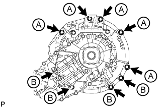 |
Install the manual transmission with transfer with the 9 bolts.
| Item | Length |
| Bolt A | 50 mm (1.97 in.) |
| Bolt B | 45 mm (1.77 in.) |
| 4. INSTALL MANUAL TRANSMISSION WITH TRANSFER (for 1VD-FTV) |
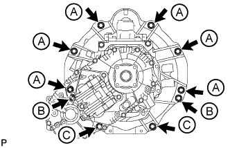 |
Install the manual transmission with transfer with the 10 bolts.
| Item | Length |
| Bolt A | 45 mm (1.77 in.) |
| Bolt B | 50 mm (1.97 in.) |
| Bolt C | 70 mm (2.76 in.) |
| 5. INSTALL OIL PAN COVER (for 1VD-FTV) |
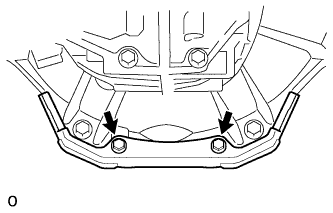 |
Install the oil pan cover with the 2 bolts.
| 6. INSTALL CLUTCH RELEASE CYLINDER TO FLEXIBLE HOSE TUBE |
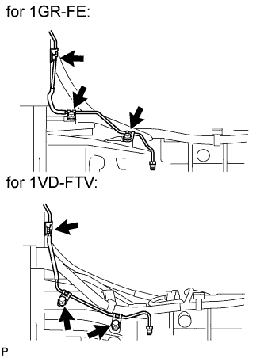 |
Install the flexible hose tube with the 3 bolts.
| 7. INSTALL CLUTCH RELEASE CYLINDER ASSEMBLY |
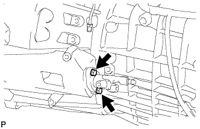 |
Install the clutch release cylinder with the 2 bolts.
| 8. INSTALL CLUTCH ACCUMULATOR ASSEMBLY |
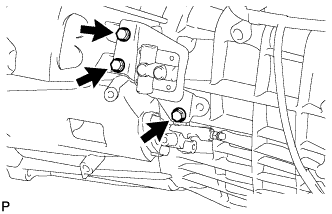 |
Install the clutch accumulator with the 3 bolts.
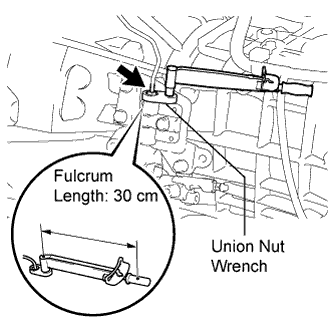 |
Using a union nut wrench, connect the flexible hose tube.
| 9. INSTALL CLUTCH RELEASE CYLINDER TO ACCUMULATOR TUBE |
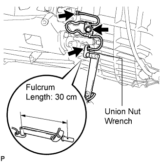 |
Using a union nut wrench, connect the tube to the clutch accumulator and release cylinder.
Install the tube with the bolt.
| 10. INSTALL NO. 1 CLUTCH HOUSING COVER |
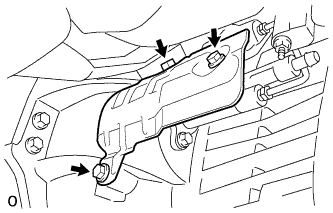 |
Install the housing cover with the 3 bolts.
| 11. CONNECT WIRE HARNESS (for 1GR-FE) |
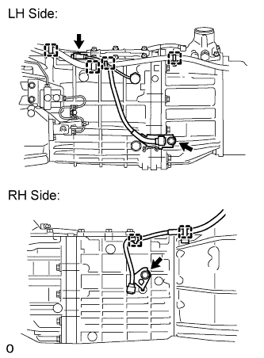 |
Connect the 6 clamps.
Connect the back-up light switch connector.
Install the 2 bolts.
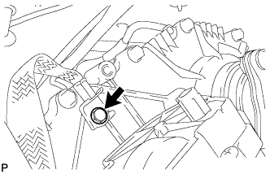 |
Connect the ground cable with the bolt.
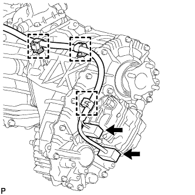 |
Connect the 2 connectors and 3 clamps.
| 12. CONNECT WIRE HARNESS (for 1VD-FTV) |
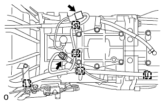 |
Connect the 5 clamps.
Connect the back-up light switch connector.
Connect the shift position switch connector.
Connect the ground cable with the bolt.
Connect the 2 connectors and 3 clamps.
| 13. INSTALL TRANSFER BREATHER HOSE SUB-ASSEMBLY (for 1GR-FE) |
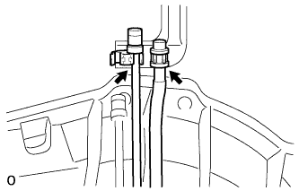 |
Connect the 2 breather hoses to the bracket.
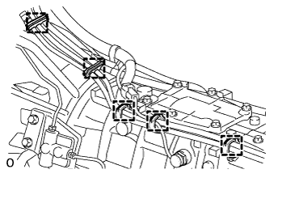 |
Connect the 5 clamps.
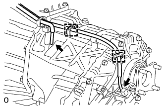 |
Connect the breather hose to the transfer and actuator, and attach the 2 clamps.
| 14. INSTALL TRANSFER BREATHER HOSE SUB-ASSEMBLY (for 1VD-FTV) |
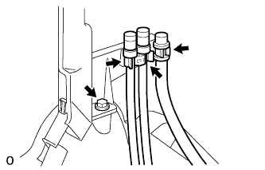 |
Install the bracket with the bolt.
Connect the 3 breather hoses to the bracket.
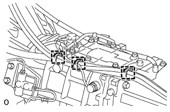 |
Connect the 3 clamps.
Connect the breather hose to the transfer and actuator, and attach the 2 clamps.
| 15. INSTALL REAR NO. 1 ENGINE MOUNTING INSULATOR |
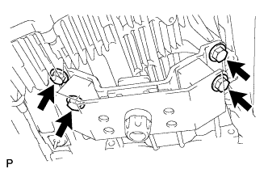 |
Install the engine mounting insulator to the transmission with the 4 bolts.
| 16. INSTALL NO. 2 FRAME CROSSMEMBER SUB-ASSEMBLY |
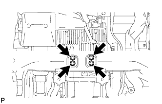 |
Install the frame crossmember to the rear engine mounting insulator with the 4 bolts.
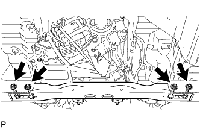 |
Install the frame crossmember to the vehicle body with the 4 bolts, 4 washers and 4 nuts.
| 17. INSTALL STARTER ASSEMBLY (for 1GR-FE) |
for 1.6 kW Type:
Install the starter assembly (Click here).
for 2.0 kW Type:
Install the starter assembly (Click here).
| 18. INSTALL TUBE CONNECTOR TO FLEXIBLE HOSE TUBE (for 1VD-FTV) |
 |
Temporarily install the flare nut of the tube connector to flexible hose tube to the clutch tube to release cylinder 2 way by hand.
 |
Temporarily install the tube connector to flexible hose tube with the 2 bolts.
Tighten the bolt labeled A.
| 19. INSTALL AIR TUBE SUB-ASSEMBLY LH (for 1VD-FTV) |
 |
Install the air tube to the throttle body.
Align the embossed mark of the throttle body with the paint mark of the No. 4 air hose.
 |
Tighten the hose clamp so that it is 7 to 11 mm (0.276 to 0.433 in.) from the end of the hose as shown in the illustration.
| 20. INSTALL CLUTCH HOSE (for 1VD-FTV) |
 |
Connect the clutch hose to the air tube with the bolt labeled A.
Temporarily install the clutch hose to the clutch master cylinder tube to flexible hose tube and tube connector to flexible hose tube, and fix it in place with the 2 clips.
Tighten the bolt labeled B.
Tighten the flexible hose tube.
 |
Using a 10 mm union nut wrench, tighten the 2 flare nuts of the flexible hose tube.
 |
Using a 10 mm union nut wrench, tighten the flare nut of the flexible hose tube.
| 21. INSTALL INTERCOOLER ASSEMBLY (for 1VD-FTV) |
Install the intercooler (Click here).
| 22. INSTALL NO. 2 MANIFOLD STAY (for 1GR-FE) |
 |
Install the No. 2 manifold stay with the 3 bolts.
| 23. INSTALL MANIFOLD STAY (for 1GR-FE) |
 |
Install the No. 1 manifold stay with the 3 bolts.
| 24. INSTALL EXHAUST PIPE (for 1GR-FE) |
Install the exhaust pipe (Click here).
| 25. INSTALL EXHAUST PIPE (for 1VD-FTV) |
Install the exhaust pipe (Click here).
| 26. INSTALL FRONT PROPELLER SHAFT ASSEMBLY |
Install the front propeller shaft assembly (Click here).
| 27. INSTALL PROPELLER SHAFT ASSEMBLY |
 |
Align the matchmarks on the propeller shaft flange and transfer.
Connect the propeller shaft with the 4 washers and 4 nuts.
 |
Align the matchmarks on the propeller shaft flange and rear differential.
Install the propeller shaft with the 4 bolts, 4 washers and 4 nuts.
| 28. ADD MANUAL TRANSMISSION OIL |
| 29. INSPECT TRANSMISSION OIL |
Park the vehicle in a level place.
 |
Check that the oil level is within 5 mm (0.196 in.) of the lowest point of the transmission filler plug opening.
Inspect for oil leaks when the oil level is low.
 |
Install a new gasket and the filler plug.
| 30. INSTALL LOWER TRANSFER CASE PROTECTOR |
 |
Install the lower transfer case protector with the 7 bolts.
| 31. INSTALL TRANSFER DYNAMIC DAMPER (for 1VD-FTV) |
 |
Install the transfer dynamic damper with the 2 bolts.
| 32. INSTALL TRANSFER HEAT INSULATOR |
 |
Install the insulator with the 4 bolts.
| 33. INSTALL FLOOR SHIFT LEVER ASSEMBLY |
Apply MP grease to the tip of the shift lever.
Cover the shift lever cap with a cloth.
Press down on the shift lever cap and rotate it clockwise to install it.
| 34. INSTALL SHIFT LEVER BOOT ASSEMBLY |
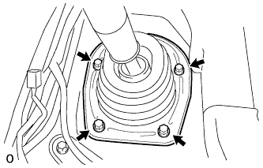 |
Install the shift lever retainer and shift lever boot with the 4 screws.
| 35. INSTALL UPPER CONSOLE PANEL SUB-ASSEMBLY |
 |
Connect the connectors.
Attach the 14 claws to install the console panel.
| 36. INSTALL CONSOLE CUP HOLDER BOX SUB-ASSEMBLY |
 |
Attach the 4 claws to install the box.
| 37. INSTALL REAR UPPER CONSOLE PANEL SUB-ASSEMBLY |
 |
Attach the 9 claws to install the panel.
| 38. INSTALL LOWER CENTER INSTRUMENT CLUSTER FINISH PANEL SUB-ASSEMBLY |
 |
Connect the connectors.
Attach the 7 claws to install the panel.
| 39. INSTALL SHIFT LEVER KNOB SUB-ASSEMBLY |
Install the shift lever knob and twist it in the direction indicated by the arrow.

| 40. INSTALL LOWER INSTRUMENT PANEL PAD SUB-ASSEMBLY RH |
 |
Attach the 7 claws to install the panel pad.
Install the screw.
Install the clip.
| 41. INSTALL NO. 1 INSTRUMENT PANEL FINISH PANEL CUSHION |
 |
Attach the 7 claws to install the panel cushion.
| 42. INSTALL LOWER INSTRUMENT PANEL PAD SUB-ASSEMBLY LH |
 |
Connect the connectors and 2 clamps.
Attach the 8 claws to install the panel pad.
Install the screw.
Install the clip.
| 43. INSTALL NO. 2 INSTRUMENT PANEL FINISH PANEL CUSHION |
 |
Attach the 7 claws to install the panel cushion.
| 44. FILL RESERVOIR WITH BRAKE FLUID |
Fill the reservoir with brake fluid.
| 45. BLEED CLUTCH LINE |
 |
Remove the release cylinder bleeder plug cap.
Connect a vinyl tube to the bleeder plug.
Depress the clutch pedal several times, and then loosen the bleeder plug while the pedal is depressed.
When fluid no longer comes out, tighten the bleeder plug, and then release the clutch pedal.
Repeat the previous 2 steps until all the air in the fluid is completely bled.
Tighten the bleeder plug.
Install the bleeder plug cap.
Check that all the air has been bled from the clutch line.
| 46. CHECK FLUID LEVEL IN RESERVOIR |
Check the fluid level.
If the brake fluid level is low, check for leaks and inspect the disc brake pad. If necessary, refill the reservoir with brake fluid after repair or replacement.
| 47. INSPECT FOR CLUTCH FLUID LEAK |
| 48. CONNECT CABLE TO NEGATIVE BATTERY TERMINAL |